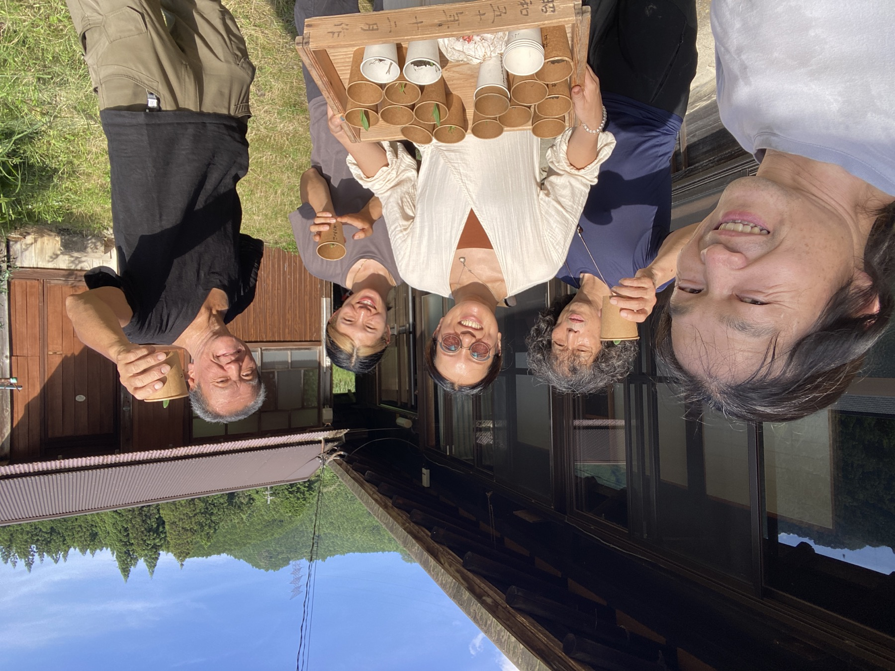
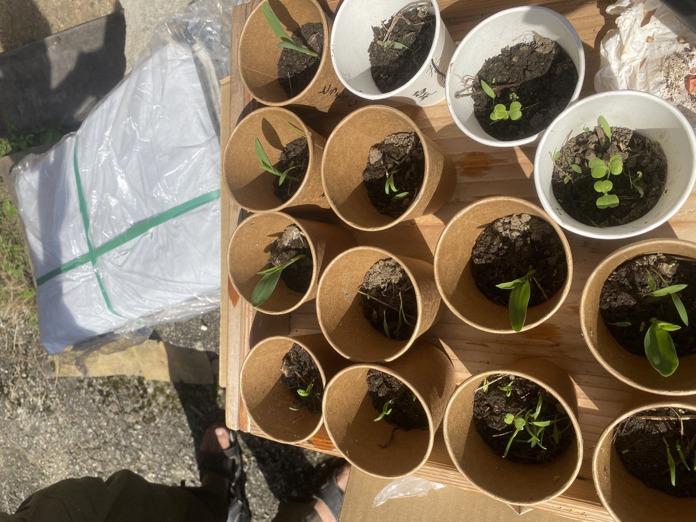
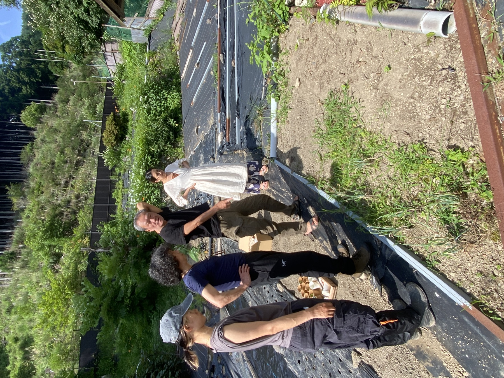
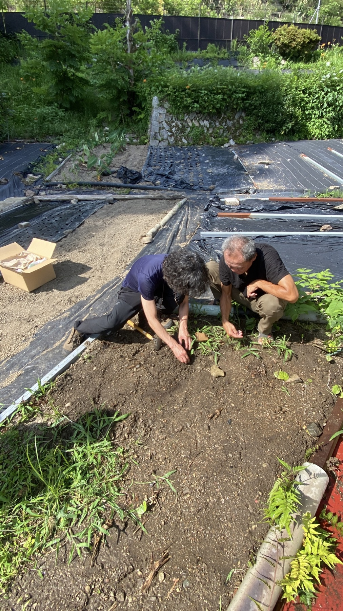
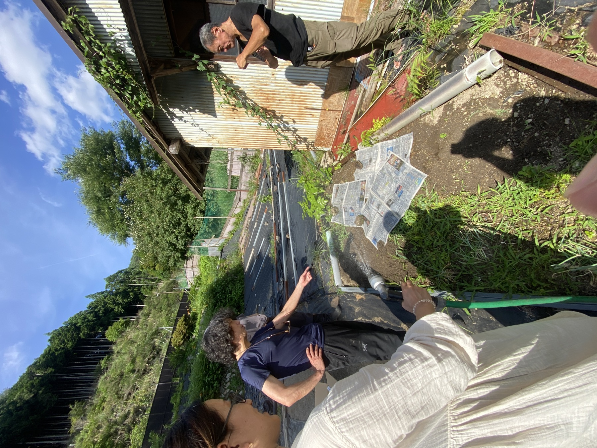
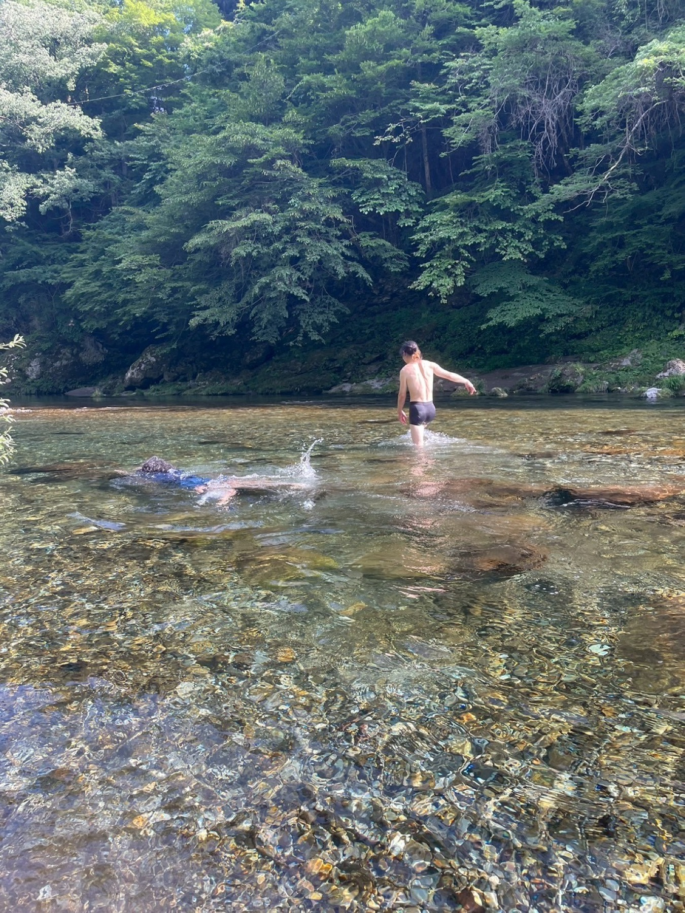

01 — FIRST PRACTICE
第1回、種から始める
2026年4月28日、前田薫の家の横の畑と耕作放棄地で初開催。「ふかふかの素」を土に置き、種から野菜を育て始めました。
Tenkawa Natural Farming Community
VOL.02 — 2026.07.14
第1回の結果を受け取り、主催者と畑を次の人へ。
「ふかふかの素（旧称：Bちゃん）」から始まった実践が、
土・水・身体・心をつなぐ一日へ育ちました。
COMMUNITY — 仲間に入る
参加者の実践レポート、次回イベント情報、
「自分の場所でも主催したい」という相談もここに集まります。
参加無料・匿名OK・いつでも抜けられます。
EVENT REPORT — VOL.02
第1回で出た芽と、育たなかった野菜。その両方を受け取り、今回は苗を先に育ててから畑へ。第1回参加者だったウラさんが主催を引き受け、民泊裏の畑を新しい実践の場所として開いてくれました。






SOIL・WATER・BODY・MIND
「ふかふかの素」が、目に見えない微生物の働きによって土をほぐしていく。畑のあとに入った天川の水は、火照った身体を冷まし、感覚をひらいてくれました。
川遊びのあとは、トムさんの整体を参加者それぞれが体験。写真には残っていないけれど、身体のこわばりがほどけると、心まで静かになっていく時間がありました。土を整えること、身体を整えること、心を整えること。それらは別々ではなく、同じ自然の循環の中にあるのかもしれません。
「浦」という字が水辺を思わせるように、ウラさんの民泊“裏”の畑から、川へ、そして自分の内側へ。第2回は、自然農法を学ぶだけでなく、心身ともに自然へ帰っていく一日になりました。
土から、川へ。川から、身体へ。身体から、心へ。
OUR STORY — 第1回から第2回へ
この活動は、完成した農法を一方的に教える場ではありません。実際に試し、うまくいかなかったことも共有し、次の実践へつなぐ。その積み重ねを、仲間みんなの知恵にしていきます。
01 — FIRST PRACTICE
2026年4月28日、前田薫の家の横の畑と耕作放棄地で初開催。「ふかふかの素」を土に置き、種から野菜を育て始めました。
02 — WHAT WE LEARNED
芽は出たものの、作物より雑草が早く育ち、野菜は十分に育ちませんでした。一方、土は柔らかくなり始めました。この結果を、第2回の改善材料にしました。
03 — HANDING OVER
第1回に参加したウラマリコさんの「自分の畑でもやりたい」という思いから、民泊裏の畑へ会場と主催を受け渡しました。トムさんが講師、前田薫が進行・運営を支えました。
04 — SECOND PRACTICE
第1回の結果を踏まえ、先に苗を育ててから定植。作物が小さい間は雑草を抜かずに刈り、光を確保する方法へブラッシュアップしました。
05 — NEXT FIELD
イベントを開くたびに畑が一つ増え、持ち帰った人の庭やプランターにも小さな実践が増える。次に始める人を、これまでの仲間が一緒に支えます。
06 — SHARED VISION
土・食・暮らしを入口に、それぞれが描く地域や教育、コミュニティのビジョンともつなぐ。自然農を、誰かの天命を応援し合う活動へ育てます。
Vol.01 — 2026.04.28


VOICES — 参加者の声
なんか、凄く深い学びをした気持ちです。それでいて、肩の力が抜けたような。皆さんとのお話しも楽しくて、時間を忘れてしまいそうでした。今後もどうぞ宜しくお願いします💖
安川真紀子 さん
今日は学び＆きづき＆ご縁をたくさんいただいてありがタケ〜です🙏 まずは明日のお昼にBちゃんを蒔きます🧑🌾 今後ともよろチクお願いします😊
池田亮 さん
中々こういう話をするとまだまだ特異な目で見られると思いますので、皆さまという仲間に出会えたことがまず財産だなと思います🙏 私も今年はいろんな野菜を試しに作ってみたいなと思いました。
うらら さん
あなたの声もぜひ聞かせてください → LINEオープンチャットへ
LEARNING NOTES — 第2回講義の要点
第2回の録音をもとに、実践時に振り返りやすい形へ整理しました。呼び名は「Bちゃん」から「ふかふかの素」へ。まずは小さく試し、土地ごとの変化を仲間で記録していきます。
BASIC — 基本の考え方
土の中には、空気を好む微生物と、空気の少ない環境を好む微生物がそれぞれの層にいるため、深く耕して層を反転させない、という考え方が紹介されました。
WEEDS — 雑草との付き合い方
雑草の根は土の保湿や微生物の働きに役立つため、根から抜かずに残します。ただし作物が小さい間は、光を奪われないよう周囲を刈ります。
PLACEMENT — ふかふかの素の置き方
講義では、1坪あたり100gを目安に3等分し、三角形になる3か所へ塊で置く方法を実践。微生物が働き始める「基地」をつくるイメージです。
WATER — 最初の水
最初は置いた場所をしっかり湿らせます。講義では上から見て右回りに水をまく方法も共有されました。その後の畑は雨を基本とし、極端に乾く時だけ補います。
SEEDLINGS — 第1回からの改善
第1回では発芽後に雑草へ負けたため、第2回は種を事前に水へ浸け、ふかふかの素を活かした土で苗を育ててから植えました。
SMALL START — 暮らしから始める
庭や小区画から始め、一度に広げすぎないこと。講義ではプランターで試す場合、微生物の環境を保つため底穴のない容器を使う方法が紹介されました。
QUESTIONS & ANSWERS — 当日の質疑応答
録音後半の質疑応答を、質問者名を推測せず「質問／回答」で整理しました。回答は当日の説明を要約したもので、土地の状態に応じて小さく試し、経過を見ながら調整することが前提です。
PRACTICE — 実践レポート
参加者へお渡しした「ふかふかの素（旧称：Bちゃん）」の使い方と、
その後の変化を教えてください。
プランター1つでも、庭でも、畑でも。
どんな小さな報告でも、ここに積み重ねていきます。
STEP 01
まだの方はこのページ上部のボタンから
STEP 02
「今日やってみた」「こうなった」それだけでOK
STEP 03
投稿された実践レポートをここにまとめていきます
第1回・第2回参加者の実践レポートを募集中です。
あなたの畑、庭、プランターでの変化をここに積み重ねていきます。